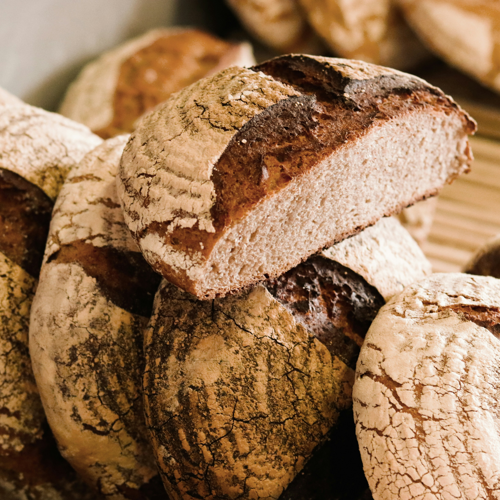

Crumb & Co.
- Home
- About Us
- Contact
Featured
Pan Dulce
Savor the authentic taste of Mexico with our irresistible pan dulce. Soft, sweet, and utterly delightful, our traditional pastries are a true indulgence. From sweet buns to sugary spirals, each bite is a delicious journey to the heart of Mexican bakery tradition. Treat yourself to a taste of home at our bakery today.
